|  |
| A common error of logic is the assumption that because fractal patterns often emerge from iterative processes, iteration always must result in some sort of fractal structure. |
| To be sure, iterative algorithms can generate interesting musical patterns and textures. |
| However, the burden of demonstrating the existences of some specific fractal characteristic falls to those making the claim. |
Return to Mistakes.